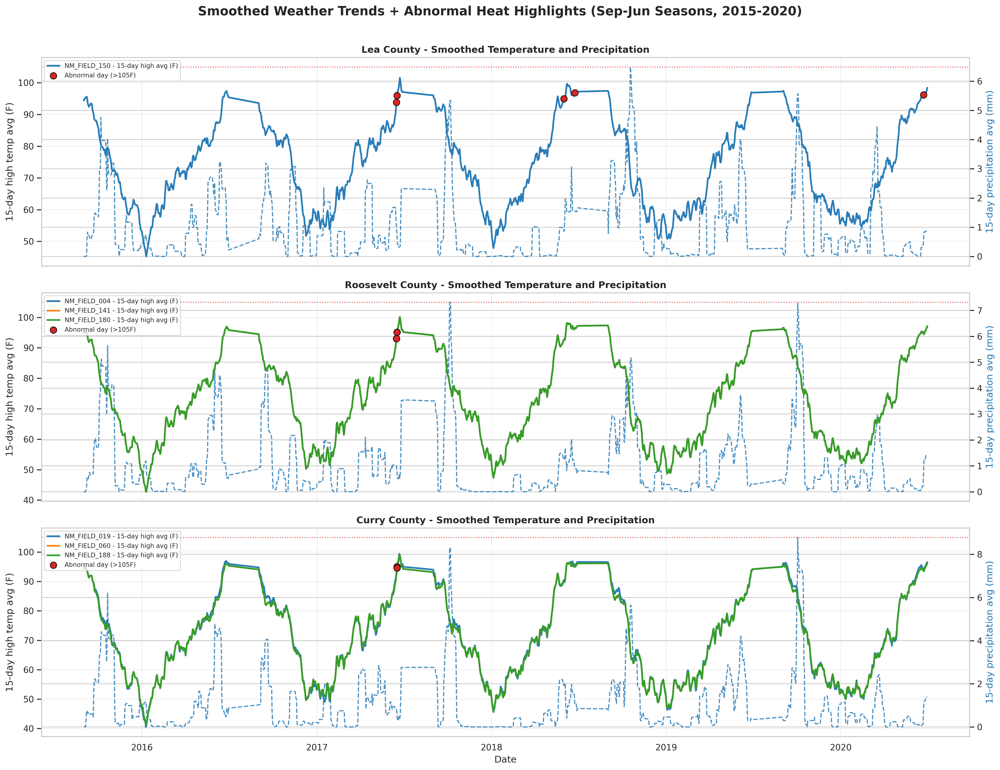
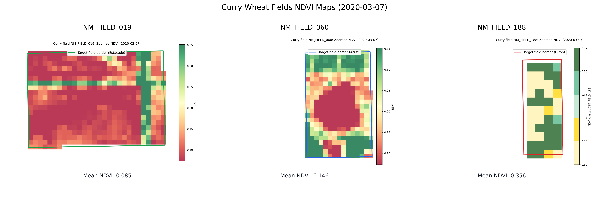

2010

Side-by-side comparison of 2010 and 2020 agronomic patterns using consistent filtering and chart design.
Excluded categories: Other Hay/Non Alfalfa, Code_236, Developed/Medium Intensity, Developed/Low Intensity, and Open Water.
Across both years, acreage and soil-crop combinations remain concentrated in a few dominant classes while minor classes contribute much less coverage. The OM charts suggest broadly similar central tendency between 2010 and 2020, with differences appearing mainly in category-level spread and sample composition.
Estimated acreage by crop class after exclusion filtering.

Field-level OM distributions with counts for each year.


Count heatmaps of soil-crop combinations by year.


OM boxplots by crop class with sample-size labels.


Smoothed 15-day high temperature and precipitation for selected Winter Wheat fields in Lea, Roosevelt, and Curry counties.

This panel summarizes September-to-June seasons from 2015-09 through
2020-06. Red markers indicate days where daily maximum temperature
exceeded 105F. A companion raw daily chart is also exported to
output/dashboard_assets/weather_trends_raw.png for
day-level inspection.
One combined image with three zoomed Curry field panels, NDVI underlay, and mean NDVI labels below each panel.

The combined view uses Assignment 05 NDVI (2020-03-07) and includes three zoomed Curry field panels. Border colors vary by soil type. Mean NDVI is shown directly under each panel without field ID text. `NM_FIELD_188` uses NDVI class breaks at 0.32, 0.33, 0.34, 0.35, 0.36, and 0.37. CRS checks confirm the source layers start in mixed CRS (fields/soil: EPSG:4326, counties: EPSG:4269, NDVI: EPSG:32613), then vectors are reprojected to EPSG:32613 before analysis.